Behavior Insights¶
All teachers have access to Codio’s Behavior Insights which combines different IDE logs into understandable measures to detect cases of potential plagiarism.
Enable Behavior Insights for your Course¶
Behavior Insights is enabled at the course-level. Navigate to the Courses page and select the course to open it. Then choose Basic Settings under Grading in the left hand menu.
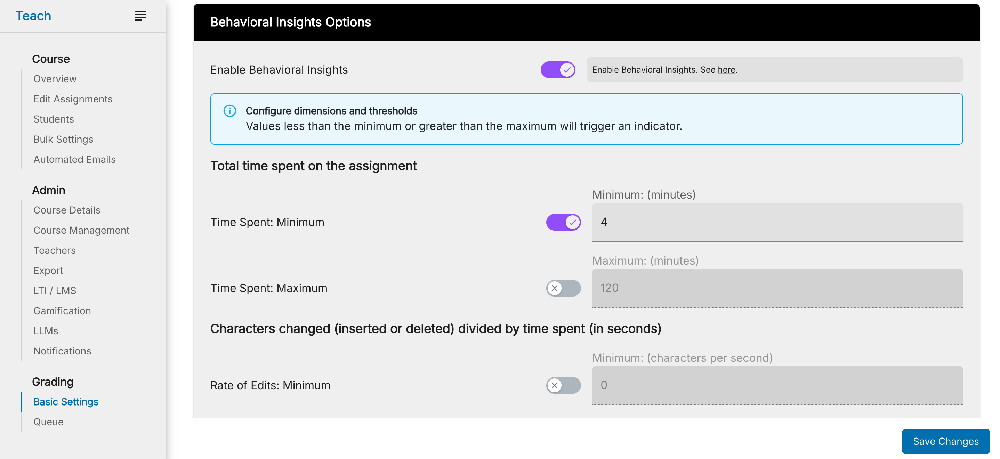
Toggle on the Enable Behavioral Insights setting and click Save Changes.
Configure Behavior Insights Options¶
You can toggle the availability of individual Behavior Insights tiles and change the minimum and maximum values for a particular option. Values less than or equal to the minimum or greater than or equal to the maximum will trigger an indicator and show up in the Behavior column for that respective student.
- Time Spent (minutes)
Codio tracks the amount of time the students spent working on the assignment in our online IDE.
You can set the minimum value in minutes, and students who spent less than or equal to that will trigger an indicator flagging potential plagiarism concerns.
You can set the maximum value in minutes, and students who spent greater than or equal to the maximum will trigger an indicator flagging potential student struggle.
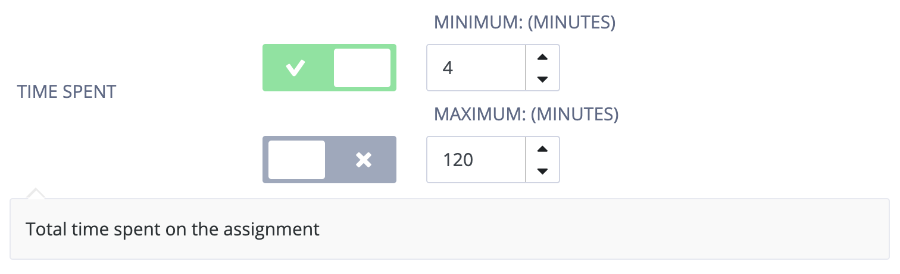
- Rate of Edits (Characters per Second)
Based on thousands of student submissions, we determined that submissions created with a pace of more than 4 characters edited (inserted or deleted) per second had a high likelihood of being plagiarized.
You can set the minimum value in characters per second, and students who edited at a rate less than or equal to the minimum will trigger an indicator flagging potential student struggle.
You can set the maximum value in characters per second, and students who edited at a rate greater than or equal to the maximum will trigger an indicator flagging potential plagiarism concerns.
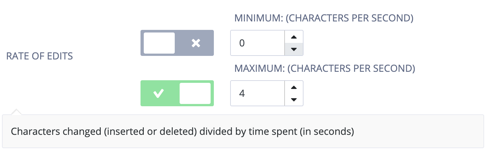
- Coding vs Debugging Time
You can monitor the percent of time spent students spent in an error state (debugging) vs a non-error state (coding). In the context of detecting plagiarism, it would be odd for students to never have errors or spend no time trying to resolve them. Based on thousands of student submissions, we determined a generalized threshold of less then 4% of the time in an error state (i.e. “debugging”) had a high likelihood of being plagiarized.
You can set the minimum value as a percent, and students who spent less than or equal to the minimum time debugging will trigger an indicator flagging potential plagiarism concerns.
You can set the maximum value as a percent, and students who spent greater than or equal to the maximum time debugging will trigger an indicator flagging potential student struggle.
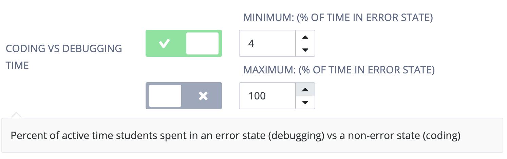
- Insertions vs Deletions
You can monitor the percent of characters inserted vs characters deleted across assignment code files for the student.
You can set the minimum value as a percent, and students who deleted less than or equal to the minimum will trigger an indicator flagging potential plagiarism concerns.
You can set the maximum value as a percent, and students who deleted greater than or equal to the maximum will trigger an indicator flagging potential student struggle.
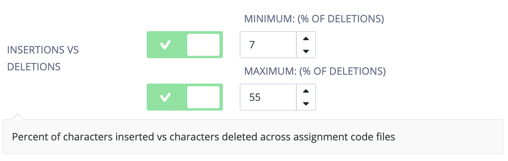
- External Pastes
You can monitor each occurrence of a paste that did not come from an assignment code file or the Guide.
You can set the minimum number of lines of code that count as an occurrence of an external paste. The smallest accepted value is 2 lines of code, meaning that when students paste 2 or more lines of code, Codio counts that as an external paste occurrence. Students often paste code that is one line or less (e.g. import statement, regular expression from a testing website, symbols they cannot find on their keyboard such as
|) which is not captured by this dimension due to the lower chance of plagiarism concern. For more fine-grained information on a student’s coding process which would show these smaller pastes, see Code Playback.You can set the maximum number of paste occurrences, and students who had greater than or equal to the number of paste occurrences will trigger an indicator potentially indicating plagiarism concerns.
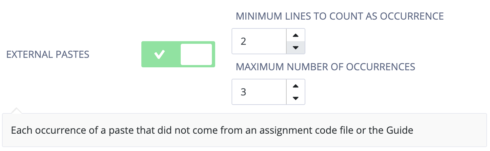
Note
For reference, the values in the images above are Codio’s default values.
Viewing Behavior Insights¶
When you go to the Student progress page of an assignment in that course, you will now see a Behavior column and be able to filter and sort based on the behavior indicator.
You can see coloured boxes around all behavior insight indicators.When the box is empty(i.e has no tiles)it shows that no thresholds has been broken.
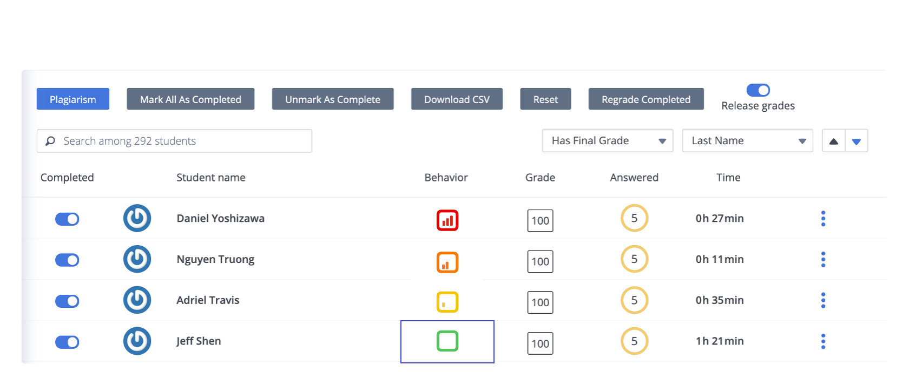
Note
Behavior Insights will only appear once an assignment is marked as complete. Lack of tiles in the coloured boxes means no behavior thresholds have been met - the student has no indications of the specified behavior which would trigger the indicator.
Click on an indicator under the Behavior column to see the Behavior Insights Dashboard.
When thresholds are broken this would Indicate broken thresholds with red outline .Tiles without broken thresholds should be visible but won’t have red outline or explanatory text beneath. Student names with arrows would be visible in top left corner (similar to other grade dialogue that appears when you click on the boxed grade number) so that teachers can cycle through the different student’s to view their insight dashboard.
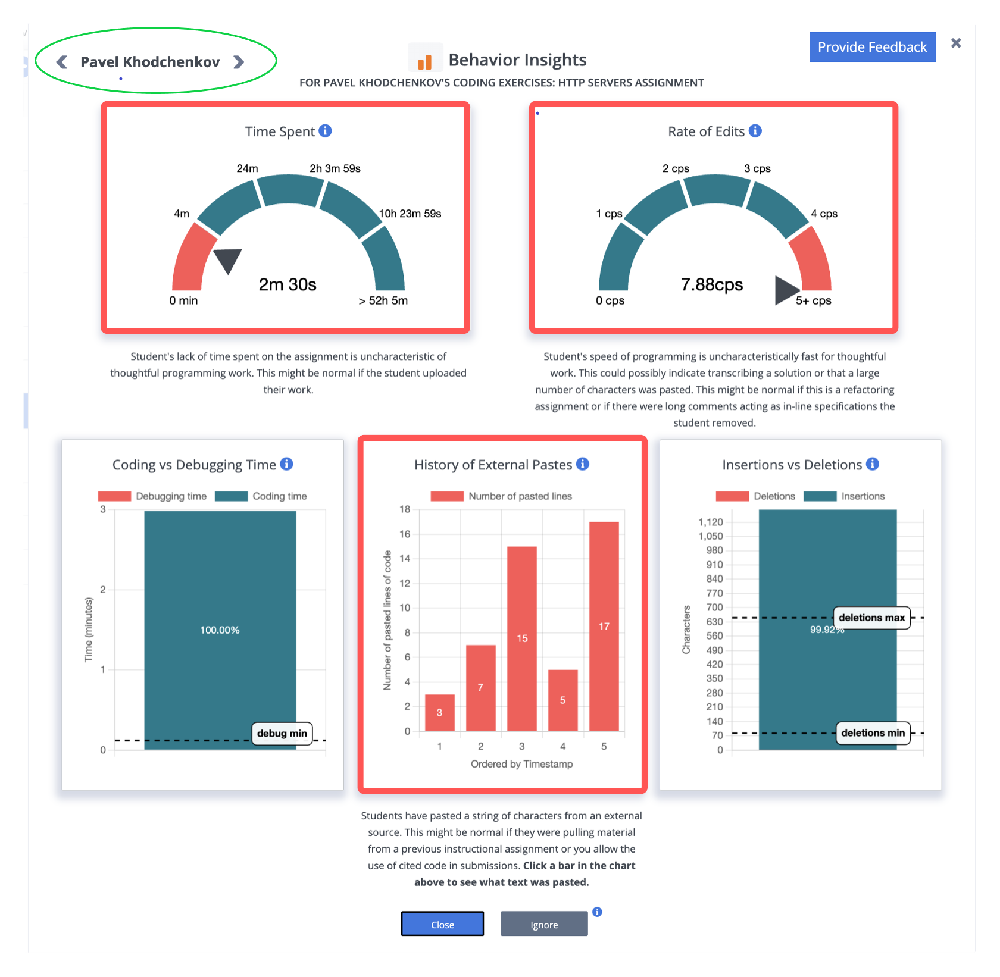
There will be between 1 and 5 tiles displayed. Tiles are only displayed if the student value is outside of a given threshold (indicated by dashed lines or red on the tile). Each tile has a textual description directly below it to help teachers interpret the numerical date presented in graphical form on the tile.
Click the Ignore button at the bottom of the dashboard to remove the behavior indicator for that student on that assignment. This action cannot be undone.
Behavioral Player¶
You can also view students activity for all files in the assignment going to Education > Behavioral Player menu option.
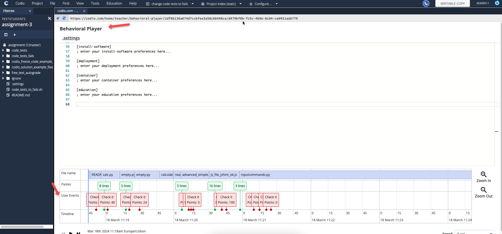
From User Events row, you can see when the student clicked Try it and Check it button so you will have a complete picture of the student journey as they are constructing their code and when they are testing it. You can also see the Points earned by student at that specific Check it button so you can easily figure out the highest score.
You can hover over these Check it/Try it boxes from User Events row to know the name of the respective assessment.
The Timeline row provides the details about the date/time when the respective User Event happened.
History of External Pastes and CodePlayback¶
If you click on a bar in the History of External Pastes tile, you will be presented with that paste in Codio’s Code Playback feature.
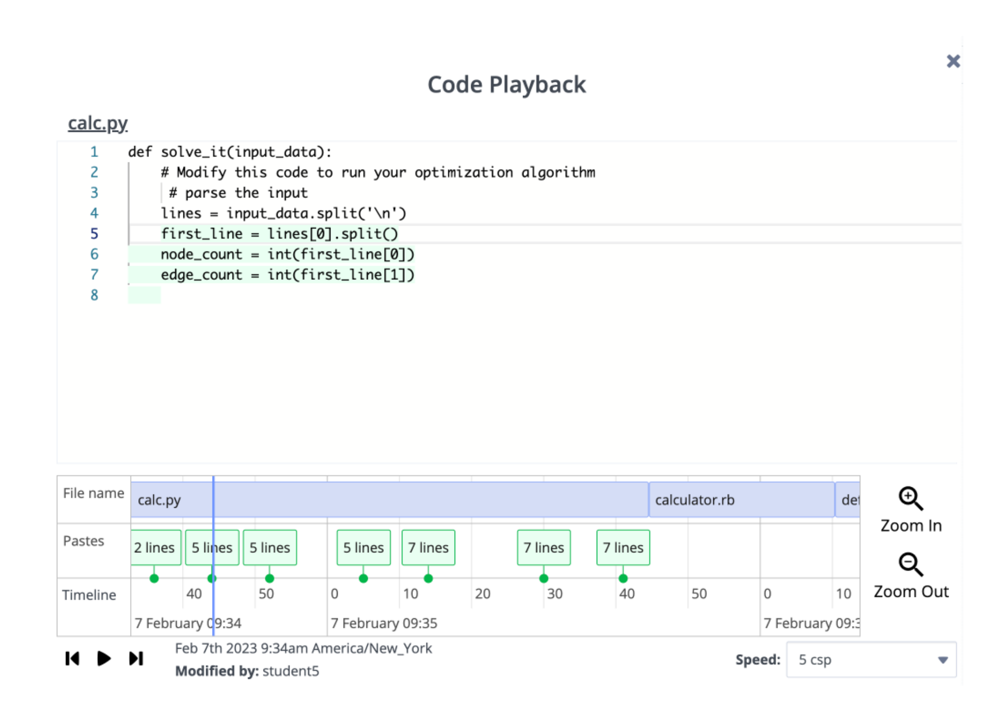
The top pane shows the contents of the modified file with the change higlighted in green (inserted characters) or red (deleted characters).
The timeline at the bottom indicates all detected pastes, and clicking on the paste will bring you to that point in the timeline.
if History of External Pastes tile is empty, you can still open the player from Education > Behavioral Player as explained in the previous section.
No Data¶
Behavior Insights is built on Codio’s IDE instrumentation. This means if your students work on their local IDE and simply upload their work to Codio, or you have them working on a 3rd party IDE inside Codio (e.g. VSCode, Jupyter, RStudio, vim, nano), you might see that some tiles are being shown to indicate lack of data:
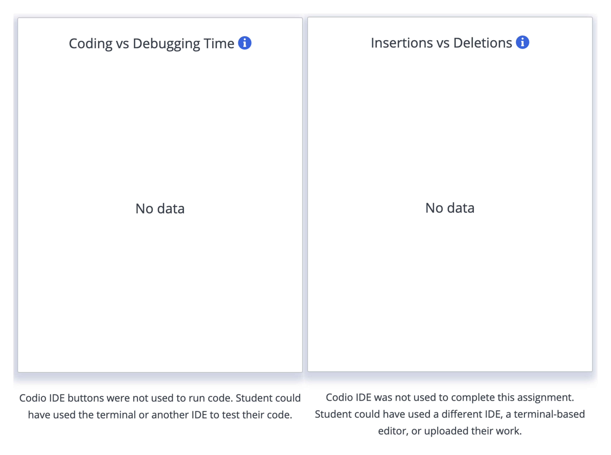